Model1：FnBP侵袭蛋白高通量筛选模型
一、研究背景与作用原理
1.1 研究背景
三阴性乳腺癌肿瘤微环境会特异性富集革兰氏阳性菌，胞内细菌可躲避常规抗生素杀伤，为细菌载体药物递送提供天然条件。
本研究底盘工程菌为表皮葡萄球菌、木糖葡萄球菌，菌株自身无天然FnBP，需外源导入侵袭蛋白提升肿瘤侵入能力。
纤连蛋白结合蛋白（FnBP）分布于葡萄球菌、链球菌表面，可介导细菌侵入肿瘤细胞；但FnBP同源蛋白数量多，纯湿实验筛选周期长、成本高，亟需计算模型高效筛选。
1.2 FnBP作用基础机制
FnBP含多组串联重复固有无序区（IDRs），结合纤连蛋白（Fn）后折叠为β-拉链结构，实现高稳定、高亲和力结合。
Fn结合FnBP后发生构象改变，暴露整合素结合位点，激活FAK、Src信号通路，诱导细胞骨架重排，依靠拉链式机制完成细菌入侵。
本模型限定与研究重点：固定Fn与肿瘤细胞整合素的相互作用不变，仅聚焦FnBP-Fn复合物，从进化亲缘、动态稳定性、结合亲和力多维度定量筛选最优FnBP。
1.3 FnBP介导细菌侵袭肿瘤细胞完整分子机制
- 锚定阶段（本模型研究靶点）：葡萄球菌表面FnBP特异性结合肿瘤胞外基质中的纤连蛋白Fn，是细菌定植肿瘤的第一步。
- 分子桥构建：结合细菌的Fn通过C端RGD序列结合肿瘤细胞膜整合素α5β1，搭建细菌 - 胞外基质 - 细胞跨膜连接。
- 胞内信号与内吞：整合素招募Talin、Kindlin蛋白，启动下游信号通路，肌动蛋白骨架重组，细胞膜包裹细菌完成入侵。

1.4 整体筛选逻辑
- 进化评估：16S rRNA系统发育树，预判外源蛋白在工程菌中的表达可行性，缩减候选数量（模型亮点：前置粗筛降低计算成本）
- 结构预测：AlphaFold-Multimer批量构建FnBP-Fn复合物三维结构，获得可信初始构象
- 动态验证：1000 ns全原子分子动力学模拟，RMSD滑动平均分析，评估生理条件下复合物稳定性
- 定量排序：MM/PBSA热力学计算，量化不同FnBP与Fn的结合自由能，直观对比亲和力强弱
- 机制解析：残基接触统计、残基自由能分解，定位核心结合热点，阐释分子识别机制
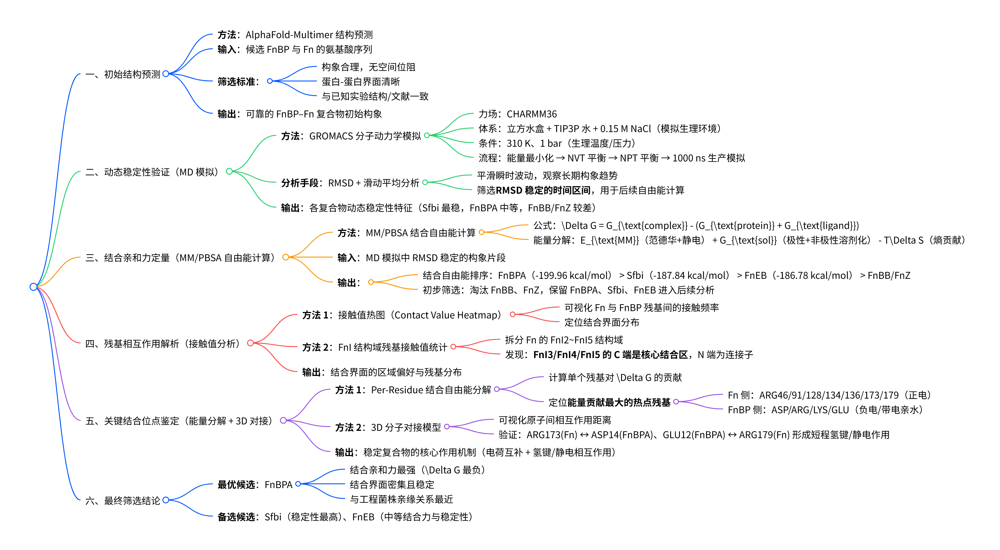
二、系统发育分析（进化粗筛）
2.1 实验方法
收集全部候选FnBP来源菌株与两株工程菌的16S rRNA序列。MEGA12软件序列比对，最大似然法（ML）构建进化树，同步生成遗传距离热图。
补充概念：16S rRNA为细菌分类分子钟；ML算法精准还原物种进化距离；工程菌表皮葡萄球菌、木糖葡萄球菌无内源FnBP。
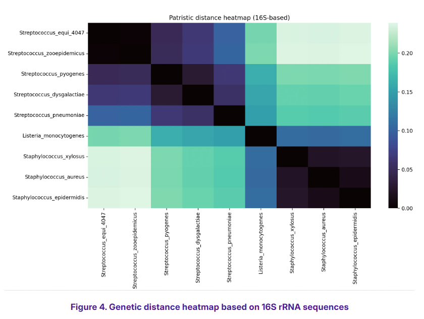
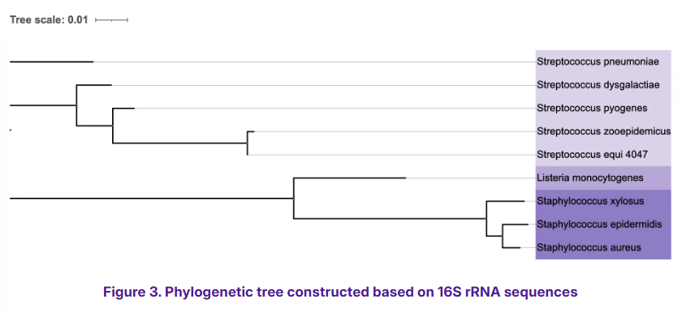
2.2 图表判读规则
- 系统发育树：分支越近，物种亲缘越近，进化差异越小；
- 遗传距离热图：颜色越黑/深紫→遗传距离越小（亲缘越近）；颜色越绿/蓝→遗传距离越大（亲缘越远）。
2.3 进化筛选结论
金黄色葡萄球菌与工程底盘菌（表皮葡萄球菌、木糖葡萄球菌）同属葡萄球菌属，亲缘关系最近，遗传距离极小；链球菌属、李斯特菌与底盘菌亲缘较远。
金黄色葡萄球菌来源的FnBPA蛋白最有可能在工程菌中成功表达并保持完整功能，是最优外源侵袭蛋白候选来源。
三、分子动力学（MD）模拟：复合物动态稳定性验证
3.1 AlphaFold-Multimer 初始结构预测
输入各类FnBP与Fn氨基酸序列，批量预测FnBP-Fn蛋白复合物三维结构，筛选无空间位阻、与文献报道结构匹配的构象作为模拟初始模型。
3.2 MD模拟体系与流程
使用GROMACS软件开展1000 ns全原子分子动力学模拟，力场CHARMM36，水环境TIP3P，0.15 M NaCl模拟生理渗透压；完整流程：能量最小化→NVT恒温平衡→NPT恒压平衡→1000 ns长时生产模拟。
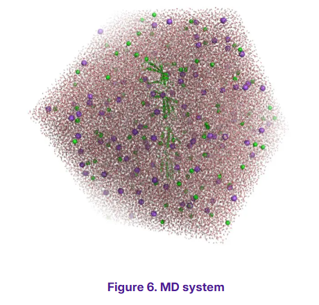
3.3 RMSD滑动平均稳定性分析
指标说明：RMSD（均方根偏差）数值越低、曲线波动幅度越小，代表蛋白复合物构象越稳定；滑动平均消除瞬时震荡，直观体现长期稳定趋势。依据平滑后曲线截取无剧烈波动区间，作为MM/PBSA自由能计算输入轨迹。
各蛋白RMSD曲线
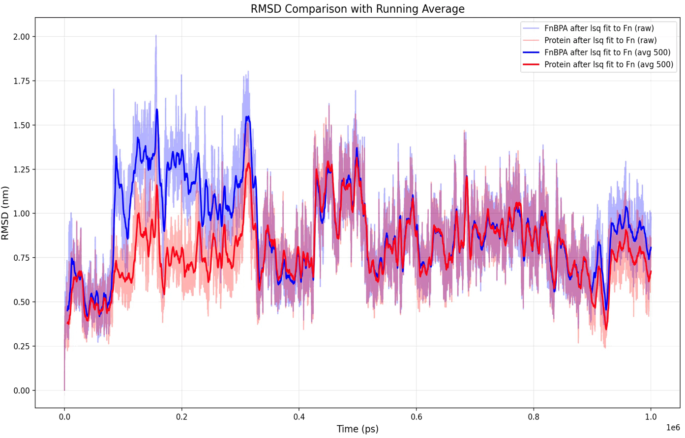
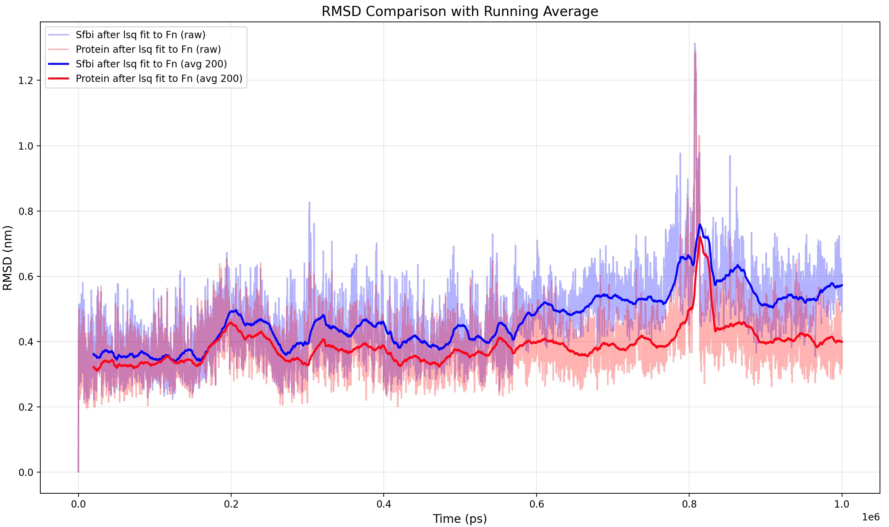
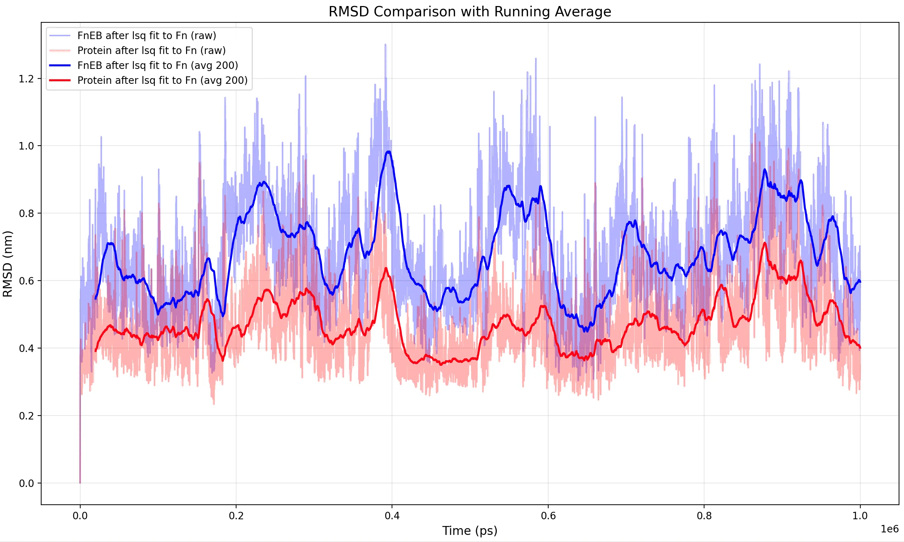
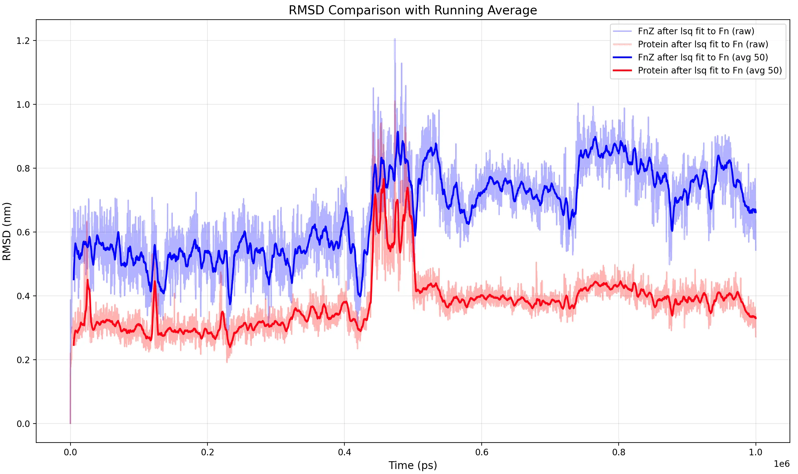
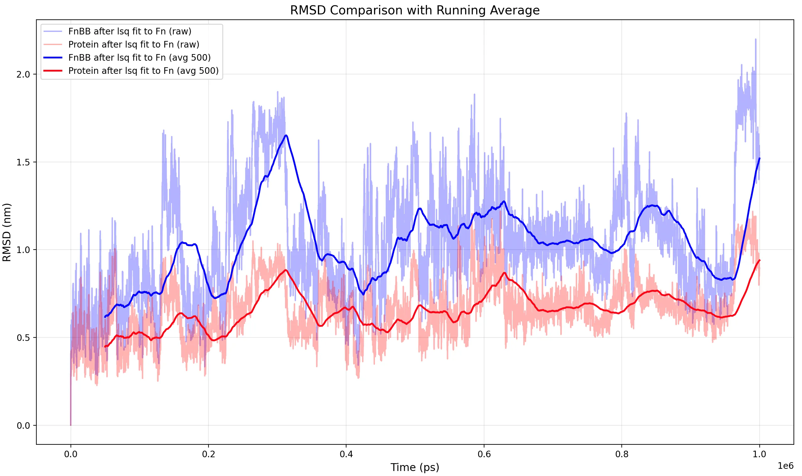
各复合物稳定模拟区间汇总
| FnBP复合物体系 | 稳定时间区间 |
|---|---|
| Streptococcus pyogenes Sfbl type1 | 0–800 ns |
| Streptococcus pyogenes Sfbl type2 | 820–1000 ns |
| Streptococcus equi subsp. zooepidemicus FnZ type1 | 0–413.7 ns / 779.1–1000 ns |
| Streptococcus dysgalactiae FnBB | 650–750 ns |
| Streptococcus equi subsp. equi FnEB | 410–522 ns |
| Staphylococcus aureus FnBPA type1 | 0–77.91 ns |
| Staphylococcus aureus FnBPA type2 | 526.31–937.94 ns |
稳定性初步分级
| 复合物 | 构象稳定性 | 初步筛选结果 |
|---|---|---|
| FnBPA–Fn | 中等 | 保留候选 |
| SfbI–Fn | 最高 | 备选 |
| FnEB–Fn | 中等 | 备选 |
| FnBB–Fn | 差 | 淘汰 |
| FnZ–Fn | 中等偏下 | 淘汰 |
四、MM/PBSA结合自由能定量亲和力排序
4.1 计算原理
计算FnBP(配体)+Fn（受体）形成复合物释放的能量，ΔG数值越负，放热越多，蛋白结合亲和力越强、复合物越稳定。
Emm分子力学能=范德华力＋静电相互作用；Gsol溶剂化能=极性溶剂化能+非极性溶剂化能。
4.2 核心作用
- 定量排序：直观对比各FnBP与Fn结合紧密程度；
- 残基能量分解：定位贡献结合力的关键氨基酸；
- 指导湿实验定点突变，验证分子互作机制。
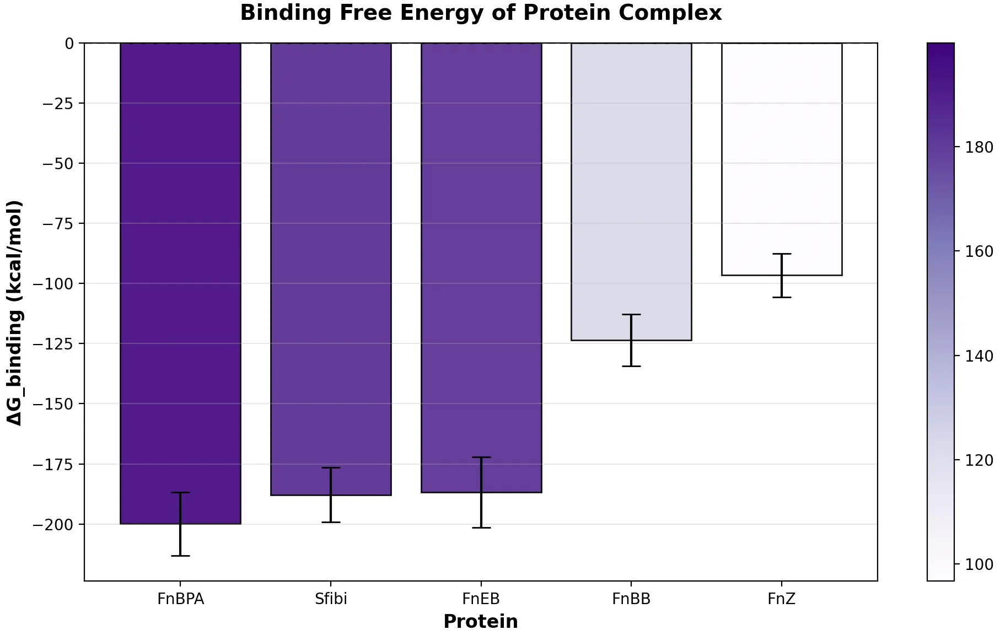
4.3 亲和力筛选结果
FnBPA结合自由能最负（-199.96 kcal/mol），亲和力最强；SfbI构象稳定性第一，但结合力弱于FnBPA；FnEB综合表现中等；FnBB、FnZ结合亲和力差，直接淘汰。后续分子互作分析仅聚焦FnBPA、SfbI、FnEB。
五、残基相互作用与结合热点解析
5.1 残基接触热图分析
色块颜色越深，对应两组氨基酸在模拟全程接触频率越高，为核心互作区域。
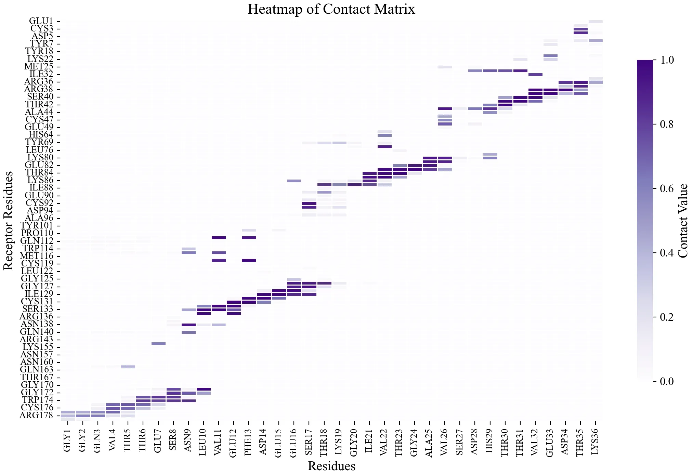
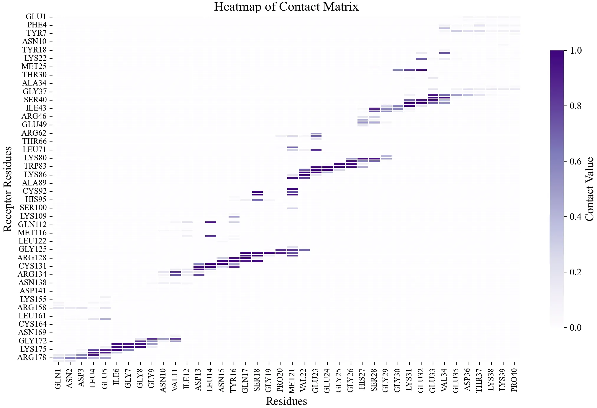
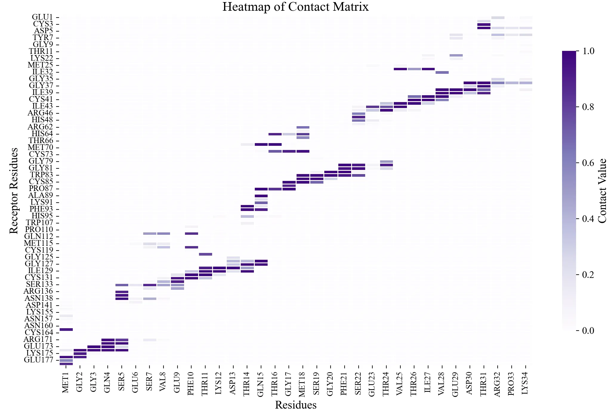
界面特征对比
- FnBPA：高密度深色接触区块最多，整体结合界面最密集；
- SfbI：深色条带连续均匀，界面分布规整，对应RMSD高稳定性；
- FnEB：接触密度、均匀度均介于两者之间。
统一规律：三类FnBP均优先结合Fn内部重复序列结构域，结合后无序多肽折叠为反平行β折叠，与文献报道的β拉链结合模式完全吻合。
5.2 Fn分结构域接触定量统计
将纤连蛋白拆分为FnI2、FnI3、FnI4、FnI5四个独立结构域，统计全部氨基酸总接触值，锁定结合热点区段。
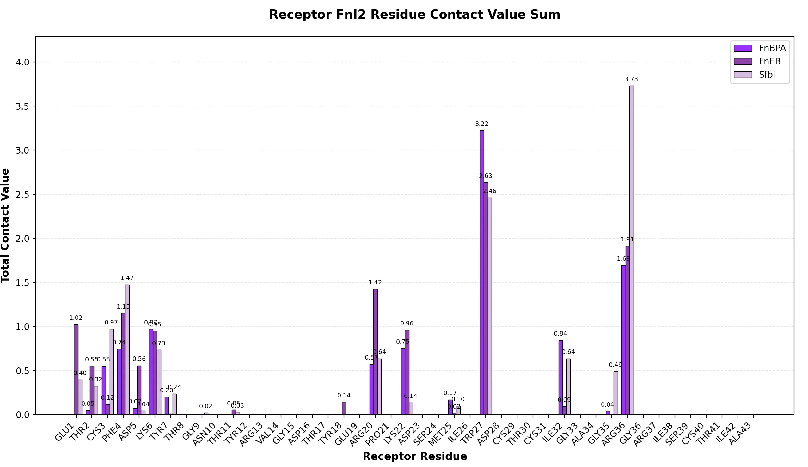
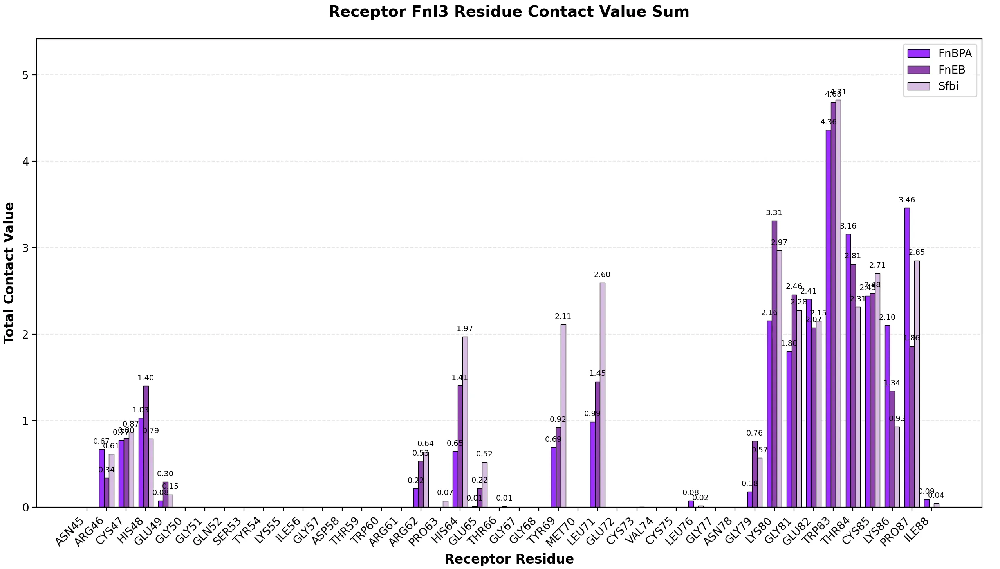
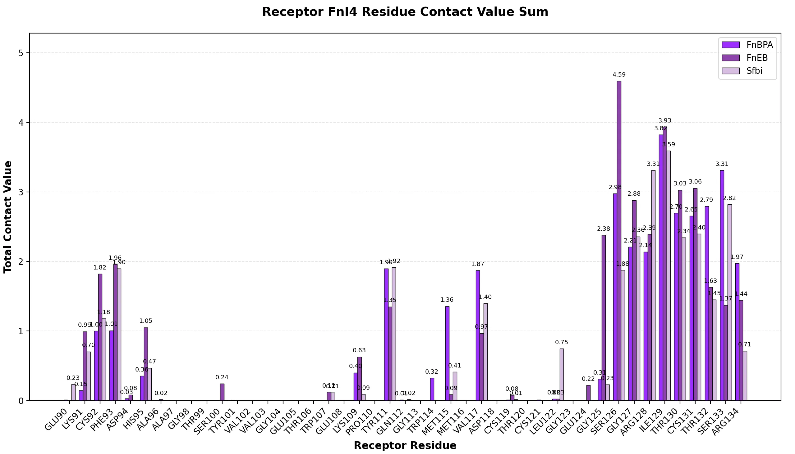
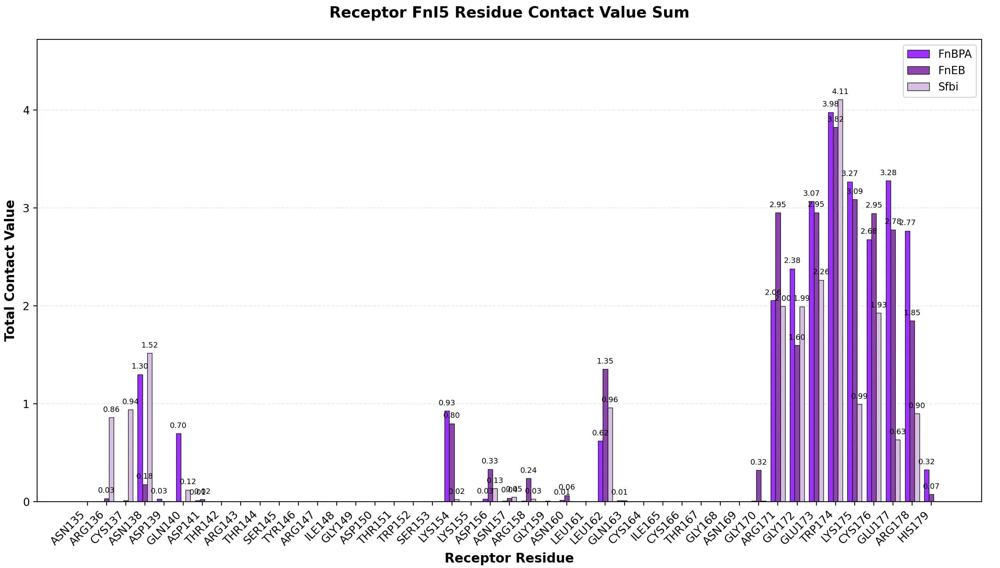
FnI3、FnI4、FnI5结构域C端残基接触数值显著更高，是FnBP主要结合功能区；FnI2全段接触值极低，仅作为柔性连接链，几乎不参与FnBP相互作用。
5.3 单残基结合自由能分解（关键热点鉴定）
通过残基水平自由能分解，识别稳定复合物的核心氨基酸：Fn上大量ARG精氨酸残基提供强结合贡献，FnBP中ASP天冬氨酸、GLU谷氨酸、ARG、LYS赖氨酸为关键作用残基，依靠带电残基氢键与静电作用稳定复合物。
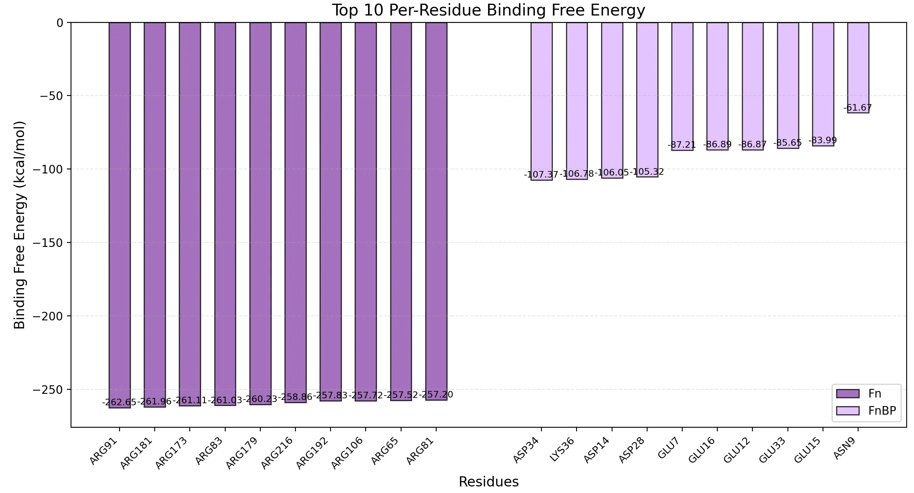
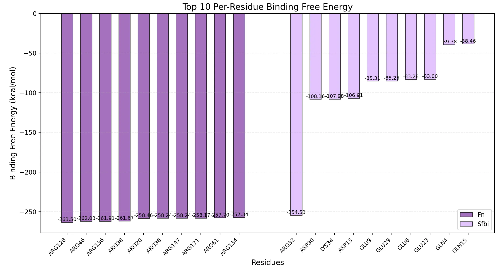
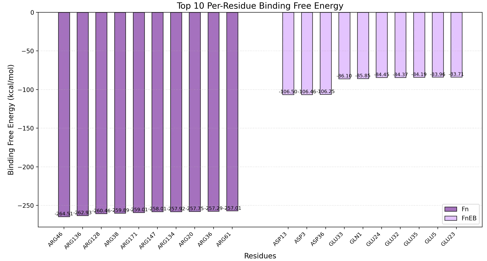
5.4 三维对接互作可视化（FnBPA核心氢键）
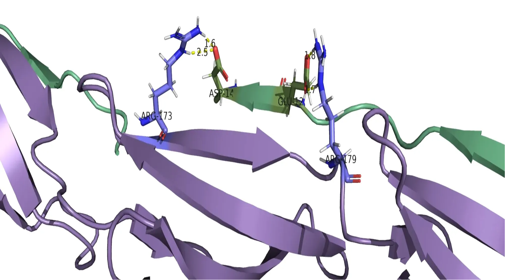
- Fn ARG179 ↔ FnBPA GLU12：氢键距离 1.7 Å、1.8 Å；
- Fn ARG173 ↔ FnBPA ASP14：氢键距离 1.6 Å、2.5 Å；
机制总结：短距离氢键与跨残基静电协同作用，是FnBPA与Fn高亲和力结合的微观基础。Fn的C端FnI3/4/5为核心结合区，正电ARG与FnBP负电ASP/GLU形成氢键、静电网络，支撑高强度结合。
六、多维度综合筛选与最终结论
6.1 三重筛选评价维度
- 进化亲缘层面：金黄色葡萄球菌与底盘工程菌（表皮葡萄球菌、木糖葡萄球菌）同属葡萄球菌属，遗传距离最近，FnBPA异源表达成功率、蛋白功能保守性最优。
- 分子模拟热力学层面：FnBPA结合自由能−199.96 kcal/mol，全部候选中亲和力最强；SfbI构象稳定性第一，但结合能力不及FnBPA；FnEB综合表现中等；FnBB、FnZ稳定性、亲和力双差，直接淘汰。
- 原子互作机制层面：FnBPA拥有数量最多的高贡献热点残基，依靠Fn正电ARG与自身负电ASP/GLU形成完整稳定氢键、静电网络，结合界面密集完整。
6.2 项目最终筛选结果
综合进化适配性、生理动态稳定性、分子结合亲和力三重定量标准，FnBPA为本项目最优外源侵袭蛋白，可导入表皮葡萄球菌/木糖葡萄球菌底盘菌用于三阴性乳腺癌靶向侵袭递送。
总结
本套计算筛选体系通过进化粗筛、分子动力学动态验证、MM/PBSA定量亲和力、残基互作机制解析完整流程，快速完成多同源FnBP蛋白的高通量筛选，大幅降低纯湿实验时间与成本；建模结果为TroGen工程菌侵袭模块分子设计提供完整理论支撑，明确FnBPA最优表达策略，并完整阐释β拉链式细菌入侵分子基础，为后续蛋白定点改造、体内肿瘤靶向实验提供指导。
Model2：肿瘤细胞内细菌扩散动力学模拟
一、研究背景与模型定位
1.1 三阴性乳腺癌临床治疗瓶颈
- TN缺乏ER、PR、HER2靶点，传统靶向药失效；化疗易耐药，免疫疗法缓解率极低；
- TNBC侵袭性强、预后差、复发率高，亟需全新生物靶向治疗方案。
1.2 肿瘤胞内共生细菌天然优势
特定革兰氏阳性共生菌可选择性富集于TNBC肿瘤细胞内部，躲避机体免疫清除，可改造为原位微型药物工厂，实现肿瘤精准给药。
1.3 建模目标
构建多尺度动力学数学模型，定量模拟改造后工程菌在肿瘤内扩散、迁移、增殖、消亡全过程；预测菌群时空分布，优化给药方案、指导菌株改造。
模型核心目标：模拟捕捉肿瘤细胞内细菌的空间迁移和种群动态。
二、模型基础简化假设
2.1 运动简化假设
- 细菌运动拆分为：被动扩散（菲克定律）+间质液平流输运；
- 连续介质假设：细菌、养分视为连续浓度场，不追踪独立单个菌体。
2.2 微环境与生长简化假设
- 肿瘤组织、宿主免疫反应简化为静态背景，忽略双向反馈；
- 细菌生长仅依赖单一底物葡萄糖，同时引入种群密度抑制效应。
三、模型迭代开发全过程
3.1 迭代1：基础指数增长模型（初代框架）
从质量守恒方程出发，通量拆分扩散项、对流项，源项采用指数生长 Rb=μb。
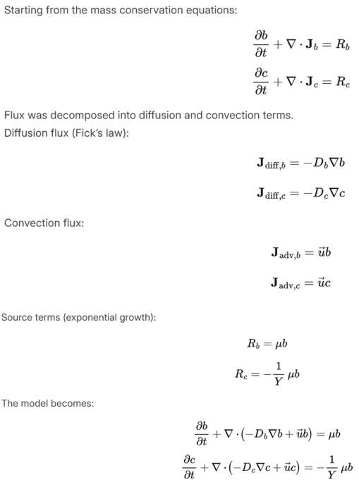
迭代1核心缺陷
- 无底物浓度对生长的抑制；
- 无环境容纳量，细菌浓度会无限爆炸增长；
- 忽略pH、代谢废物、营养匮乏的抑制作用，不符合真实生物学规律。
3.2 迭代2：耦合Monod-Logistic完整动力学（最终参考模型）
耦合扩散-平流-生长偏微分方程组，同时引入养分依赖与种群密度双重抑制，解决指数模型无上限缺陷。
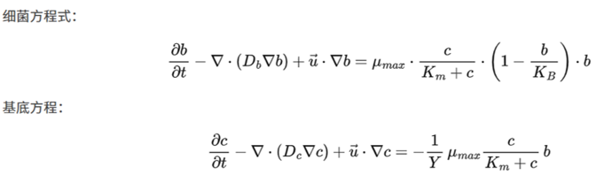
方程组核心机制解读
- Monod营养限制项 c/(Km+c)：米氏动力学，营养匮乏时生长速率趋近于0；
- Logistic密度制约项 (1−b/KB)：环境承载上限，细菌拥挤后增殖自动放缓；
- 底物方程与细菌生长完全耦合，通过产率系数量化葡萄糖消耗与菌群增殖关系。
模型框架应用价值
- 为同类细菌-肿瘤动力学建模提供标准化参考；
- 定量解析细菌入侵后胞内时空演化规律；
- 预留拓展接口，可耦合pH、溶氧、群体感应模块持续优化。
四、COMSOL数值模拟体系搭建
4.1 几何、初始条件与仿真时长
- 三维球形肿瘤模型，半径0.005 cm；
- 初始细菌仅分布球体边界：B₀=3.17×10⁻¹¹ mol/m³，模拟外源侵染；
- 葡萄糖底物球内均匀分布：C₀=2 mol/m³；
- 总仿真时长6 h，与体外实验观测窗口匹配，方便数据对照验证。
4.2 全套仿真参数表
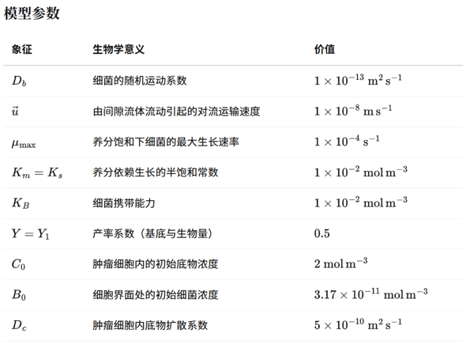
五、仿真结果可视化与定量分析
5.1 径向浓度剖面（0~6h时空演化）
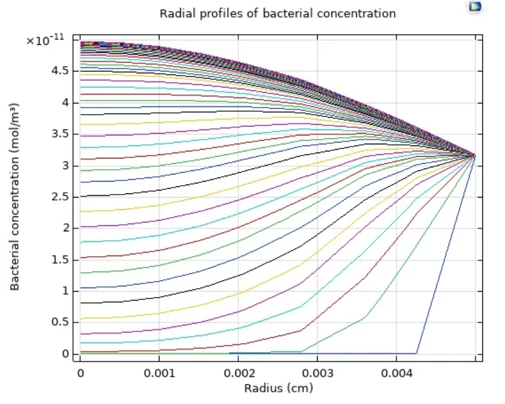
- 0h：细菌仅聚集肿瘤外缘，球心浓度极低；
- 随模拟时间推移曲线持续向内延伸，球心浓度逐步上升；
- 扩散+增殖形成正向反馈，最终全域浓度趋于稳定平台。
5.2 二维横截面时序热力云图
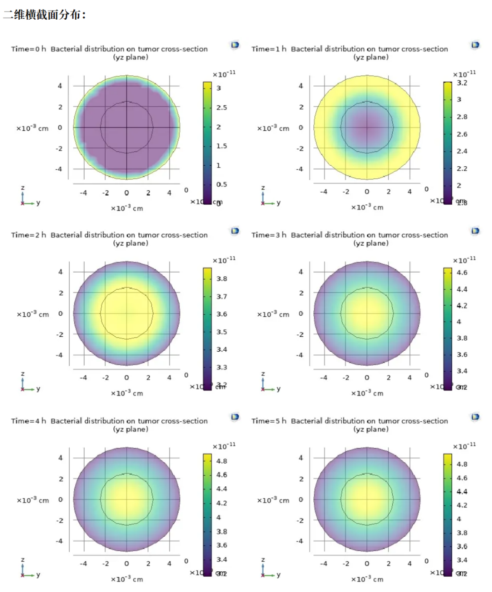
核心特征：细菌呈波浪式从外向内推进；0~4h高浓度黄色区域持续向球心扩张；5~6h云图分布几乎无变化，增殖、消耗、扩散达到动态准稳态。
5.3 时序定量浓度曲线（模拟vs实验对照）
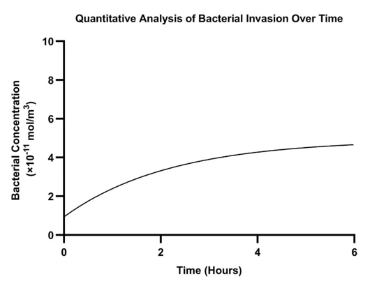
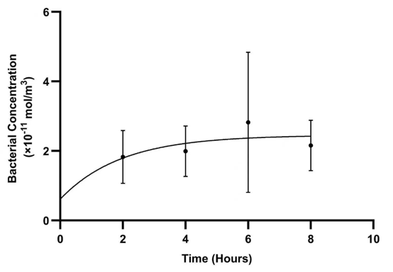
模拟与实验对比结论
- 整体增长趋势高度吻合：初期快速增殖，增速持续放缓，最终趋向稳态；
- 偏差来源：模型简化，未纳入pH、溶氧、代谢废物抑制，仿真稳态浓度略高于体外实验，平台期更早出现。
六、模型局限性与未来迭代优化方向
6.1 当前模型短板
- 仅单一葡萄糖作为碳源，忽略氨基酸、维生素多营养协同作用；
- 未耦合pH、溶氧、乳酸代谢废物动态抑制项；
- 肿瘤、免疫、细菌静态假设，缺少双向动态反馈耦合；
- 未整合群体感应、生物膜形成等微生物微观行为。
6.2 后续升级思路
- 拓展多底物耦合Monod动力学方程组；
- 新增pH、氧气浓度动态偏微分方程，双向调控细菌生长速率；
- 整合群体感应、胞外基质降解模块，提升体内微环境预测精度；
- 耦合免疫细胞清除项，更贴合真实体内肿瘤微环境。
Model2总结
本扩散动力学模型完整还原工程菌侵入肿瘤后的迁移增殖全过程，COMSOL仿真直观证明细菌可从外缘持续渗透至肿瘤核心；Monod+Logistic双重约束解决无上限增殖缺陷，仿真趋势与体外实验匹配，为给药剂量、给药间隔、菌株改造提供可量化理论预测工具。